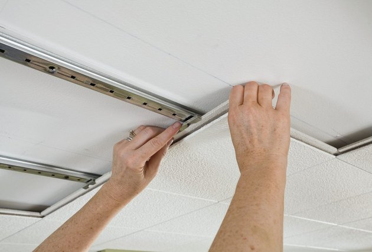

The problem in room A009 is the echo we have found a soulution to this problem Fiberglass
- The fiberglass tiles will reduce sound while being easy to replace and install
- They also can help hold in heat in the winter and reduce heating operating costs
- They are a Class-A on the fire prevention scale to help prevent fires from damaging the support beams
- The tiles will be placed in tracks like the ones seen in other parts of the building
- The tracks the tiles will be set on will be mounted to the ceiling using metal wires
- It is the best solution because Facilities already has experience placing in tiles like this exact solution
